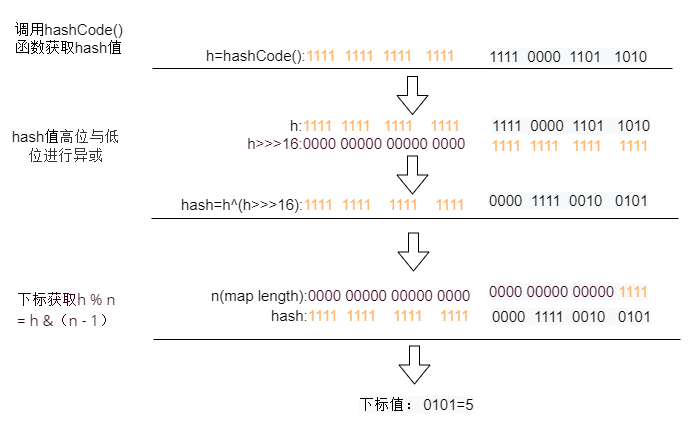

Welcome to yanliang's notes.
[TOC]
Java 容器有哪些？ 哪些是同步容器？ 哪些是并发容器？
https://juejin.cn/post/6844903954719965192
Java 容器主要分两种：Collection 和 Map，Collection 是用于存储对象的集合，Map 是用于存储键值对的集合。 其中Collection又可以分为List 和 Set两种集合。
实现List接口的集合主要有：ArrayList，LinkedList，Vector（Stack）
实现Set接口的集合主要有：HashSet，LinkedSet，TreeSet
实现map接口的集合主要有：HashMap，LinkedHashMap，TreeMap，HashTable
其中属于 同步容器 的有：Vector，Stack，HashTable，另外 Collections 提供了以下几种方法可以将非同步容器转化为同步容器
1 | List list = Collections.synchronizedList(new ArrayList()); |
并发容器
CopyOnWriteArrayList
CopyOnWriteArraySet
ConcurrentHashMap
ConcurrentSkipListMap
ConcurrentSkipListSet
集合框架有哪些优点
- 使用核心集合类降低开发成本，而非实现我们自己的集合类。
- 随着使用经过严格测试的集合框架类，代码质量会得到提高。
- 通过使用 JDK 附带的集合类，可以降低代码维护成本。
- 复用性和可操作性。
为什么集合类没有实现 Cloneable 和 Serializable 接口？
克隆（cloning）或者序列化（serialization）的语义和含义是跟具体的实现相关的。因此应该由集合类的具体实现类来决定如何被克隆或者序列化
集合框架中的泛型有什么优点？
Java5 引入了泛型，所有的集合接口和实现都大量地使用它。泛型允许我们为集合提供一个可以容纳的对象类型。因此，如果你添加其它类型的任何元素，它会在编译时报错。这避免了在运行时出现 ClassCastException，因为你将会在编译时得到报错信息。
泛型也使得代码整洁，我们不需要使用显式转换和 instanceOf 操作符。它也给运行时带来好处，因为不会产生类型检查的字节码指令。
- 编译时类型检查
- 使代码整洁
- 运行时不会产生类型检查相关的字节码指令
Collection 和 Collections 的区别？
- Collection ，是集合类的上级接口，继承与他的接口主要有 Set 和List 。
- Collections ，是针对集合类的一个工具类，它提供一系列静态方法实现对各种集合的搜索、排序、线程安全化等操作。
什么是迭代器(Iterator)？
Iterator 接口提供了很多对集合元素进行迭代的方法。每一个集合类都包含了可以返回迭代器实例的 迭代方法。迭代器可以在迭代的过程中删除底层集合的元素。
Iterator和ListIterator的区别是什么？
下面列出了他们的区别：
- Iterator 可用来遍历 Set 和 List 集合，但是 ListIterator 只能用来遍历 List 。
- Iterator 对集合只能是前向遍历，ListIterator 既可以前向也可以后向。
- ListIterator 实现了 Iterator 接口，并包含其他的功能，比如：增加元素，替换元素，获取前一个和后一个元素的索引，等等。
fail-fast
fail-fast 机制是Java集合(Collection)中的一种错误机制。 在用迭代器遍历一个集合对象时，如果遍历过程中对集合对象的结构进行了修改（增加、删除），则会抛出Concurrent Modification Exception（并发修改异常）。
原理：迭代器在遍历时直接访问集合中的内容，并且在遍历过程中使用一个 modCount 变量。集合在被遍历期间如果内容发生变化，就会改变modCount的值。每当迭代器使用hashNext()/next()遍历下一个元素之前，都会检测modCount变量是否为expectedmodCount值，是的话就返回遍历；否则抛出异常，终止遍历。
注意：这里异常的抛出条件是检测到 modCount！=expectedmodCount 这个条件。如果集合发生变化时修改modCount值刚好又设置为了expectedmodCount值，则异常不会抛出。因此，不能依赖于这个异常是否抛出而进行并发操作的编程，这个异常只建议用于检测并发修改的bug。
场景：java.util包下的集合类都是快速失败的，不能在多线程下发生并发修改（迭代过程中被修改）。
如何避免fail-fast抛异常？
1.如果非要在遍历的时候修改集合，那么建议用迭代器的remove等方法，而不是用集合的remove等方法。(老实遵守阿里巴巴java开发规范……)
2.如果是并发的环境，那还要对Iterator对象加锁；也可以直接使用Collections.synchronizedList。
3.CopyOnWriteArrayList（采用fail-safe）
安全失败（fail—safe）
采用安全失败机制的集合容器，在遍历时不是直接在集合内容上访问的，而是先复制原有集合内容，在拷贝的集合上进行遍历。
原理：由于迭代时是对原集合的拷贝进行遍历，所以在遍历过程中对原集合所作的修改并不能被迭代器检测到，所以不会触发Concurrent Modification Exception。虽然fail-safe不会抛出异常，但存在以下缺点
- 复制时需要额外的空间和时间上的开销。
- 不能保证遍历的是最新内容。
场景：java.util.concurrent包下的容器都是安全失败，可以在多线程下并发使用，并发修改。
https://blog.csdn.net/Kato_op/article/details/80356618
快速失败(fail-fast)和安全失败(fail-safe)的区别是什么？
Iterator 的安全失败是基于对底层集合做拷贝，因此，它不受源集合上修改的影响。
java.util 包下面的所有的集合类都是快速失败的，而 java.util.concurrent 包下面的所有的类都是安全失败的。快速失败的迭代器会抛出 ConcurrentModificationException 异常，而安全失败的迭代器永远不会抛出这样的异常。
Enumeration 接口和 Iterator 接口的区别有哪些？
Enumeration 速度是 Iterator 的2倍，同时占用更少的内存。但是，Iterator 远远比 Enumeration 安全，因为其他线程不能够修改正在被 iterator 遍历的集合里面的对象。同时，Iterator 允许调用者删除底层集合里面的元素，这对 Enumeration 来说是不可能的。
comparable 和 Comparator 的区别
Comparable和Comparator都是用来实现集合中元素的比较、排序的。
Comparable是在集合内部定义的方法实现的排序，位于java.lang 下。
Comparator是在集合外部实现的排序，位于java.util 下。
Comparable是一个对象本身就已经支持自比较所需要实现的接口，如String、Integer自己就实现了Comparable接口，可完成比较大小操作。自定义类要在加入list容器中后能够排序，也可以实现Comparable接口，在用Collections类的sort方法排序时若不指定Comparator，那就以自然顺序排序。所谓自然顺序就是实现Comparable接口设定的排序方式。
Comparator是一个专用的比较器，当这个对象不支持自比较或者自比较函数不能满足要求时，可写一个比较器来完成两个对象之间大小的比较。Comparator体现了一种策略模式(strategy design pattern)，就是不改变对象自身，而用一个策略对象(strategy object)来改变它的行为。总而言之Comparable是自已完成比较，Comparator是外部程序实现比较。
链接：https://juejin.cn/post/6844903603258261518
1 | ArrayList<Integer> arrayList = new ArrayList<Integer>(); |
List
ArrayList
默认初始容量为0（无参构造，懒初始化，首次初始化10）， 扩容时，扩容大小为之前的1.5倍
ArrayList 是 List 接口的可变数组的实现。底层使用 Object[] 来存储对象。同时是线程不安全的集合。
每个ArrayList实例都有一个容量，该容量是指用来存储列表元素的数组的大小。随着向ArrayList中不断添加元素，其容量也自动增长。自动增长会带来数据向新数组的重新拷贝，因此，如果可预知数据量的大小，就可在构造ArrayList实例时指定其容量。
在添加大量元素前，应用程序也可以使用ensureCapacity操作来增加ArrayList实例的容量，这可以减少递增式再分配的数量。
继承自 AbstractList，这是一个抽象类对一些基础的list操作做了一些封装。
实现了RandomAccess 标记接口，表明可以实现快速随机访问。
实现了Cloneable接口的实现表示该容器具有Clone函数操作，Serializable是序列化。
RandomAccess 接口的作用
**ArrayList 实现了 RandomAccess 接口，就表明了他具有快速随机访问功能。 RandomAccess 接口只是标识，并不是说 ArrayList 实现 RandomAccess 接口才具有快速随机访问功能的！
为什么ArrayList自动容量扩充选择扩充1.5倍？
这种算法构造出来的新的数组长度的增量都会比上一次大( 而且是越来越大) ，避免频繁newInstance 的情况。
为什么ArrayList 不适合频繁插入和删除操作？
ArrayList中经常会调用 System.arraycopy 这个效率很低的操作来复制数组，所以导致ArrayList在插入和删除操作中效率不高。
jdk1.6中扩容算法的缺陷
（由于jdk1.7和jdk1.8在扩容算法方面差别不大，所以下面没有严格区分）
1 | jdk1.6 |
从上面的代码可以看出jdk1.6的ensureCapacity方法只是简单进行了逻辑上的操作，没有过多考虑int型溢出的问题，从1.7开始对这个进行了完善。
而且没考虑入参minCapacity可能因为int溢出变为负数。这个方法可以外部手动调用，手动扩容传入负数这个肯定是应该拦截掉的。但是自动扩容会因为int溢出产生负数，碰到这种情况时应该特殊处理，而不是什么都不做，等着后面抛出一个ArrayIndexOutOfBoundsException。
还有就是下面这句代码会造成过早溢出
1 | int newCapacity = (oldCapacity * 3)/2 + 1; |
虽然上面这行代码和1.7开始的oldCapacity + (oldCapacity >> 1) 差不多，都是相当于1.5倍，但实际上是有区别的。
这里主要有两个区别
第一个区别是jdk1.6的乘除运算的数学结果比后面一个大1比如oldCapacity=10，1.6的算法得到16，1.7开始的算法得到15，这个影响不大；
第二个区别就是两者在数字比较大时运算结果不一样，比如oldCapacity=10^9，这个数和Integer.MAX_VALUE位数一样，用1.6的算法得到的会是错误的-647483647，用1.7的则是正确的1500000000，这时候明明可以1.5倍扩容，但是jdk1.6却用的是按需扩容。
ensureCapacity（称之为手动，是因为此方法是public的，可以外部手动调用）。在1.6版本是只有这个手动的方法，内部自动操作也是调用这个方法，1.7开始进行了区分，并且进一步改进了扩容操作。
从1.7开始将内部扩容和外部可以调用的扩容方法分开了，通过源码可以看出：外部调用的手动扩容方法ensureCapacity要多一个判断条件 minCapacity > minExpand，这个判断条件拦截掉负数的minCapacity，这样调用内部扩容ensureCapacityInternal方法时，minCapacity一定是正数；内部扩容方法直接就用minCapacity - elementData.length > 0判断，此条件可以检测出int型溢出，碰到溢出最后会抛出一个OOM错误。jdk1.7用OOM，这比jdk1.6用ArrayIndexOutOfBoundsException更好，因为此时数组大小超出了虚拟机对数组的限制，虚拟机无法处理这种情况了，抛出一个ERROR是合理的。
使用这行代码
1 | newCapacity = oldCapacity + (oldCapacity >> 1); |
这行代码不仅仅是使用位运算加快执行速度，上面说了，这种做法才是对的，是真正的1.5倍。不仅仅因为那一个大小的差别，更重要的是避免过早出现int溢出的情况，保证了内部自动扩容会尽量按规定的策略执行。同时整个扩容处理流程中多增加了几处if判断，对各种情况处理更加完善。
Integer.MAX_VALUE - 8 这里为什么要减去8？
主要是考虑到不同的JVM,有的VM会在加入一些数据头,当扩容后的容量大于MAX_ARRAY_SIZE,我们会将最小需要容量和MAX_ARRAY_SIZE做比较,如果比它大, 只能取Integer.MAX_VALUE,否则是Integer.MAX_VALUE -8。这个是从jdk1.7开始才有的
modCount属性的作用？
modCount属性代表为结构性修改（ 改变list的size大小、以其他方式改变他导致正在进行迭代时出现错误的结果）的次数，该属性被Iterator以及ListIterator的实现类所使用，且很多非线程安全使用modCount属性。
初始化迭代器时会给这个modCount赋值，如果在遍历的过程中，一旦发现这个对象的modCount和迭代器存储的modCount不一样，Iterator或者ListIterator 将抛出ConcurrentModificationException异常，
这是jdk在面对迭代遍历的时候为了避免不确定性而采取的 fail-fast（快速失败）原则：
在线程不安全的集合中，如果使用迭代器的过程中，发现集合被修改，会抛出ConcurrentModificationExceptions错误，这就是fail-fast机制。对集合进行结构性修改时，modCount都会增加，在初始化迭代器时，modCount的值会赋给expectedModCount，在迭代的过程中，只要modCount改变了，int expectedModCount = modCount等式就不成立了，迭代器检测到这一点，就会抛出错误：urrentModificationExceptions。
jdk1.8的无参构造函数和之前版本的构造函数有什么区别?
1 | jdk1.6 |
对比下可以看出：jdk1.6的无参构造方法（默认构造方法）构造的ArrayList的底层数组elementData大小（容量）默认为10；从1.7开始，无参构造方法构造的ArrayList的底层数组elementData大小默认为0。
java集合类在jdk1.7版本基本上都有一种改动：懒初始化。懒初始化指的是默认构造方法构造的集合类，占据尽可能少的内存空间（对于ArrayList来说，使用空数组来占据尽量少的空间，不使用null是为了避免null判断），在第一次进行包含有添加语义的操作时，才进行真正的初始化工作。
1.7开始的ArrayList，默认构造方法构造的实例，底层数组是空数组，容量为0，在进行第一次add/addAll等操作时才会真正给底层数组赋非empty的值。如果add/addAll添加的元素小于10，则把elementData数组扩容为10个元素大小，否则使用刚好合适的大小（例如，第一次addAll添加6个，那么扩容为10个，第一次添加大于10个的，比如24个，扩容为24个，刚好合适）
1.8版本，默认构造的实例这个行为没有改变，只是用的数组名字变了。
ArrayList 和 LinkedList 的插入和访问的时间复杂度
ArrayList 底层是基于 Object[] 来进行数据存储的，针对数据的插入和删除需要进行数据的移动因此时间复杂度大致为O（n），数据支持按照下标进行随机访问，因此访问时间复杂度为O（1）
LinkedList 底层是基于双向链表来进行数据存储的，针对数据的插入和删除只需要替换响应的指针即可，因此插入的时间复杂度为O（1），由于链表结构不支持随机访问查找元素只能进行遍历，因此访问时间复杂度为O（n）
ArrayList和LinkedList的区别、优缺点以及应用场景
区别：
ArrayList是实现了基于动态数组的数据结构，LinkedList是基于链表结构。- 对于随机访问的
get和set方法查询元素，ArrayList要优于LinkedList，因为LinkedList循环链表寻找元素。 - 对于新增和删除操作
add和remove，LinkedList比较高效，因为ArrayList要移动数据。
优缺点：
- 对
ArrayList和LinkedList而言，在末尾增加一个元素所花的开销都是固定的。对ArrayList而言，主要是在内部数组中增加一项，指向所添加的元素，偶尔可能会导致对数组重新进行分配；而对LinkedList而言，这个开销是 统一的，分配一个内部Entry对象。 - 在
ArrayList集合中添加或者删除一个元素时，当前的列表移动元素后面所有的元素都会被移动。而LinkedList集合中添加或者删除一个元素的开销是固定的。 LinkedList集合不支持 高效的随机随机访问（RandomAccess），因为可能产生二次项的行为。ArrayList的空间浪费主要体现在在list列表的结尾预留一定的容量空间，而LinkedList的空间花费则体现在它的每一个元素都需要消耗相当的空间
应用场景:
ArrayList使用在查询比较多，但是插入和删除比较少的情况，而LinkedList用在查询比较少而插入删除比较多的情况
Vector和ArrayList
相同点：这两个类都实现了List接口，他们都是有序的集合（储存有序），底层都用数组实现。可以通过索引来获取某个元素。允许元素重复和出现null值。ArrayList和Vector的迭代器实现都是fail-fast的。
不同点：vector是线程同步的，所以它也是线程安全的，而arraylist是线程异步的，是不安全的。如果不考虑到线程的安全因素，一般用arraylist效率比较高。
扩容时，arraylist扩容1.5倍，vector扩容2倍（或者扩容指定的大小）
ArrayList 和Vector是采用数组方式存储数据，此数组元素数大于实际存储的数据以便增加和插入元素，都允许直接序号索引元素，但是插入数据要设计到数组元素移动等内存操作，所以索引数据快插入数据慢，Vector由于使用了synchronized方法（线程安全）所以性能上比ArrayList要差，LinkedList使用双向链表实现存储，按序号索引数据需要进行向前或向后遍历，但是插入数据时只需要记录本项的前后项即可，所以插入数度较快！
LinkedList
LinkedList是一个实现了List接口和Deque接口的双端链表。 LinkedList底层的链表结构使它支持高效的插入和删除操作，另外它实现了Deque接口，使得LinkedList类也具有队列的特性;允许包含null值。 LinkedList不是线程安全的，如果想使LinkedList变成线程安全的，可以调用静态类Collections类中的synchronizedList方法：
List list=Collections.synchronizedList(new LinkedList(…));
LinkedList是一种可以在任何位置进行高效地插入和移除操作的有序序列，它是基于双向链表实现的。内部有三个变量，size表示链表中元素的个数， first指向链表头部，last指向链表尾部。
Vector
Vector，一个可变长的数组，底层实现与 ArrayList 大同小异，但Vector是同步的（线程安全），Vector的很多方法之前都加了关键字synchronized，所以是线程安全的。
初始容量为10， 默认扩展2倍
1 | int newCapacity = oldCapacity + ((capacityIncrement > 0) ? |
Set
Set接口继承了Collection接口。Set集合中不能包含重复的元素，每个元素必须是唯一的。你只需将元素加入set中，重复的元素会自动移除。有三种常见的Set实现——HashSet, TreeSet和LinkedHashSet。如果你需要一个访问快速的Set，你应该使用HashSet；当你需要一个排序的Set，你应该使用TreeSet；当你需要记录下插入时的顺序时，你应该使用LinedHashSet。
HashSet
HashSet是是基于 HashMap 实现的，底层采用 HashMap 来保存元素,所以它不保证set 的迭代顺序；特别是它不保证该顺序恒久不变。add()、remove()以及contains()等方法都是复杂度为O(1)的方法。由于HashMap中key不可重复，所以HashSet元素不可重复。可以存储null元素，是线程不安全的。
TreeSet
TreeSet是一个有序集，基于TreeMap实现，是线程不安全的。
TreeSet底层采用TreeMap存储，构造器启动时新建TreeMap。TreeSet存储元素实际为TreeMap存储的键值对为<key,PRESENT>的key;，PRESENT为固定对象：private static final Object PRESENT = new Object().
TreeSet支持两种两种排序方式（自然排序和定制排序），通过不同构造器调用实现。
LinkedHashSet
LinkedHashSet介于HashSet和TreeSet之间。哈希表和链接列表实现。基本方法的复杂度为O(1)。
LinkedHashSet 是 Set 的一个具体实现，其维护着一个运行于所有条目的双重链接列表。此链接列表定义了迭代顺序，该迭代顺序可为插入顺序或是访问顺序。
LinkedHashSet 继承于 HashSet，并且其内部是通过 LinkedHashMap 来实现的。有点类似于我们之前说的LinkedHashMap 其内部是基于 Hashmap 实现的一样。
如果我们需要迭代的顺序为插入顺序或者访问顺序，那么 LinkedHashSet 是需要你首先考虑的。
LinkedHashSet 底层使用 LinkedHashMap 来保存所有元素，因为继承于 HashSet，所有的方法操作上又与 HashSet 相同，因此 LinkedHashSet 的实现上非常简单，只提供了四个构造方法，并通过传递一个标识参数，调用父类的构造器，底层构造一个 LinkedHashMap 来实现，在相关操作上与父类 HashSet 的操作相同，直接调用父类 HashSet 的方法即可。
无序性和不可重复性的含义是什么
1、什么是无序性？无序性不等于随机性 ，无序性是指存储的数据在底层数组中并非按照数组索引的顺序添加 ，而是根据数据的哈希值决定的。
2、什么是不可重复性？不可重复性是指添加的元素按照 equals()判断时 ，返回 false，需要同时重写 equals()方法和 HashCode()方法。
比较 HashSet、LinkedHashSet 和 TreeSet 三者的异同
HashSet 是 Set 接口的主要实现类 ，HashSet 的底层是 HashMap，线程不安全的，可以存储 null 值；
LinkedHashSet 是 HashSet 的子类，能够按照添加的顺序遍历；
TreeSet 底层使用红黑树，能够按照添加元素的顺序进行遍历，排序的方式有自然排序和定制排序。
Set中的元素不能重复，如何实现？
HashSet实现了Set接口底层基于HashMap来实现，在将一个key-value对放入HashMap中时，首先根据key的hashCode()返回值决定该Entry的存储位置，如果两个key的hash值相同，那么它们的存储位置相同。如果这个两个key的equals比较返回true。那么新添加的Entry的value会覆盖原来的Entry的value，key不会覆盖。且HashSet中add()中 map.put(e, PRESENT)==null 为false，HashSet添加元素失败。因此,如果向HashSet中添加一个已经存在的元素，新添加的集合元素不会覆盖原来已有的集合元素。
HashSet 和 TreeSet 有什么区别？
HashSet 是由一个 hash 表来实现的，因此，它的元素是无序的。add()，remove()，contains()方法的时间复杂度是 O(1)。
另一方面，TreeSet 是由一个树形的结构来实现的，它里面的元素是有序的。因此，add()，remove()，contains() 方法的时间复杂度是 O(logn)。
Map
HashMap
HashMap 是 Map 的一个实现类，它代表的是一种键值对的数据存储形式。大多数情况下可以直接定位到它的值，因而具有很快的访问速度，但遍历顺序却是不确定的。
jdk 8 之前，其内部是由 数组 + 链表 来实现的，而 jdk 8 对于链表长度超过 8 的链表将转储为 红黑树。JDK 1.8 之所以添加红黑树是因为一旦链表过长，会严重影响 HashMap 的性能，而红黑树具有快速增删改查的特点，这样就可以有效的解决链表过长时操作比较慢的问题。
HashMap最多只允许一条记录的键为null（null key 哈希值为0），允许多条记录的值为null。不保证有序 (比如插入的顺序)、也不保证序不随时间变化。
HashMap非线程安全，即任一时刻可以有多个线程同时写HashMap，可能会导致数据的不一致。如果需要满足线程安全，可以用 Collections的synchronizedMap方法使HashMap具有线程安全的能力，或者使用ConcurrentHashMap，HashTable。
HashMap的hash哈希函数的设计原理，以及HashMap下标获取方式？
1 | static final int hash(Object key) { |

- 首先获取hashcode，一个32位的int值
- 然后将hashcode左移16位的值进行与或，即将高位与低位进行异或运算，减少碰撞机率。
- 将计算得到的hash值与hashmap容量-1，进行取余运算，但在计算机运算中&肯定比%快，又因为h % n = h &（n - 1），所以最终将第二步得到的hash跟n-1进行与运算。n是table中的长度。
对于任意给定的对象，只要它的
hashCode()返回值相同，那么程序调用方法一所计算得到的Hash码值总是相同的。我们首先想到的就是把hash值对数组长度取模运算，这样一来，元素的分布相对来说是比较均匀的。但是，模运算的消耗还是比较大的，这里我们用&位运算来优化效率。这个方法非常巧妙，它通过
h & (table.length -1)来得到该对象的保存位，而HashMap底层数组的长度总是 *****2 的 n 次方*****，这是HashMap在速度上的优化。当 length 总是 2 的 n 次方时，h& (length-1)运算等价于对 length 取模，也就是h%length，但是 *&* 比 *%* 具有更高的效率。在
JDK1.8的实现中，优化了高位运算的算法，通过hashCode()的高 16 位异或低 16 位实现的：(h = k.hashCode()) ^ (h >>> 16)，主要是从速度、功效、质量来考虑的，这么做可以 Node 数组 table 的 length 比较小的时候，也能保证考虑到高低 Bit 都参与到 Hash 的计算中，同时不会有太大的开销。
设计原因：
- 一定要尽可能降低hash碰撞，越分散越好；
- 算法一定要尽可能高效，因为这是高频操作, 因此采用位运算；
HashMap 在什么情况下回进行扩容？或者有哪些操作会导致扩容？
- 在执行 HashMap 的构造函数或者 putAll() 方法时如果待添加的 map.size() 大于阈值时进行扩容
- 因为hashmap使用的是懒初始化，首次添加元素的时候会进行resize()
- 当put加入节点后，发现size（键值对数量）>threshold时，进行扩容
JDK1.7的时候是先进行扩容后进行插入，而在JDK1.8的时候则是先插入后进行扩容
先扩容再put就是不管当前插入的值所属的桶是不是空，都先扩容，会造成无效扩容；先put在扩容，会在put时发现是否当前桶为空，即是否发生hash冲突，如果发生了就扩容，不发生就等下一次插入冲突或大于阀值时扩容
Java中HashMap的key值要是为类对象则该类需要满足什么条件？
需要同时重写该类的hashCode()方法和它的equals()方法。
从源码可以得知，在插入元素的时候是先算出该对象的hashCode。如果hashcode相等话的。那么表明该对象是存储在同一个位置上的。如果调用equals()方法，两个key相同，则替换元素如果调用equals()方法，两个key不相同，则说明该hashCode仅仅是碰巧相同，此时是散列冲突，将新增的元素放在桶子上
重写了equals()方法，就要重写hashCode()的方法。因为equals()认定了这两个对象相同，而同一个对象调用hashCode()方法时，是应该返回相同的值的！
HashMap get 方法的执行过程
jdk 1.8
对输入的key的值计算hash值,
首先判断hashmap中的数组是否为空和数组的长度是否为0,如果为空和为0,则直接放回null
如果不为空和0,计算key对应的数组下标,判断对应位置上的第一个node是否满足条件,如果满足条件,直接返回
如果不满足条件,判断当前node是否是最后一个,如果是,说明不存在key,则返回null
如果不是最后一个,判断是否是红黑树,如果是红黑树,则使用红黑树的方式获取对应的key,
如果不是红黑树,遍历链表是否有满足条件的,如果有,直接放回,否则返回null
HashMap put 方法的执行过程

①.判断键值对数组 table 是否为空或为null，否则执行resize()进行扩容；
②.根据键值key计算hash值得到插入的数组索引 i，如果table[i]==null，直接新建节点添加，转向⑥，如果table[i]不为空，转向③；
③.判断 table[i] 的首个元素是否和key一样，如果相同直接覆盖value，否则转向④，这里的相同指的是hashCode以及equals；
④.判断table[i] 是否为treeNode，即table[i] 是否是红黑树，如果是红黑树，则直接在树中插入键值对，否则转向⑤；
⑤.遍历table[i]，判断链表长度是否大于8，大于8的话把链表转换为红黑树，在红黑树中执行插入操作，否则进行链表的插入操作；遍历过程中若发现key已经存在直接覆盖value即可；
⑥.插入成功后，判断实际存在的键值对数量size是否超多了最大容量threshold，如果超过，进行扩容。
1 | public V put(K key, V value) { |
jdk 1.7 put()方法
- 调用put方法的时候首先判断hashmap数组是否为空数组,
- 如果为空,进行初始化,判断key的值是否是null,
- 如果是null,把对应的value值存进数组中下标为0的位置,
- 计算key的hash值,并计算出下标,
- 遍历下标对应的链表,匹配hash值和key的值,
- 如果存在,则覆盖,返回旧值
- 如果不存在,新添加一个,返回null
- 如果扩容,是先扩容之后再把数据添加进新扩容的数组中。如果数组中元素的容量超过阈值,会触发扩容,扩容是先把源数组放进一个临时数组中,获取老数组的长度,通过老数组长度乘2获取新数组长度,并创建新数组,把临时数组中的数据通过重新计算下表,存进扩容后的数组中。
HashMap检测到hash冲突之后将元素插入到链表的头部还是尾部？
hashmap 执行尾插法（直接插入链表或红黑树尾部）
尾插法不会出现逆序，环形列表，死循环等问题
HashMap红黑树的阈值为什么是8？
首先和hashcode碰撞次数的泊松分布有关，主要是为了寻找一种时间和空间的平衡。在负载因子0.75（HashMap默认）的情况下，单个hash槽内元素个数为8的概率小于百万分之一，将7作为一个分水岭，等于7时不做转换，大于等于8才转红黑树，小于等于6才转链表。链表中元素个数为8时的概率已经非常小，再多的就更少了，所以原作者在选择链表元素个数时选择了8，是根据概率统计而选择的。
红黑树中的TreeNode是链表中的Node所占空间的2倍，虽然红黑树的查找效率为o(logN)，要优于链表的o(N)，但是当链表长度比较小的时候，即使全部遍历，时间复杂度也不会太高。所以，要寻找一种时间和空间的平衡，即在链表长度达到一个阈值之后再转换为红黑树。
Hash 冲突时为什么是红黑树而不是AVL树或B树？
AVL树比红黑树保持更加严格的平衡。因此，在AVL树中查找通常更快，但这是以更多旋转操作导致更慢的插入和删除为代价的。因此，AVL树更加适合查找密集型任务。
红黑树适用于 插入密集型 任务，而且更加通用，在添加，插入和删除方面都有不错的表现。
扩容机制
hashmap在以下几种情况时，会触发扩容机制。
- 在执行 HashMap 的构造函数或者 putAll() 方法时如果待添加的 map.size() 大于阈值时进行扩容
- 因为hashmap使用的是懒初始化，首次添加元素的时候会进行resize()
- 当put加入节点后，发现size（键值对数量）>threshold时，进行扩容
扩容就是重新定义容量，在hashmap中，如果不断的put元素，而hashMap对象中的数组无法装得下更多对象时，对象就需要进行扩容，扩大数组长度。
在java中数组是不能够自动扩容的，是采用一个新的大容量数组代替原有的小数组。
扩容后，普通链表上的节点包括红黑树都得重新映射，此时由于jdk1.8 中的hashmap规定数组的容量必须是二的幂大小，所以在重新计算元素位置时，要么在原位置，要么在原位置的基础上+原长度。
加载因子为什么是0.75？
加载因子也叫扩容因子或负载因子，用来判断什么时候进行扩容的，假如加载因子是 0.5，HashMap 的初始化容量是 16，那么当 HashMap 中有 16*0.5=8 个元素时，HashMap 就会进行扩容。
那加载因子为什么是 0.75 而不是 0.5 或者 1.0 呢？
这其实是出于容量和性能之间平衡的结果：
当加载因子设置比较大的时候，扩容的门槛就被提高了，扩容发生的频率比较低，占用的空间会比较小，但此时发生 Hash 冲突的几率就会提升，因此需要更复杂的数据结构来存储元素，这样对元素的操作时间就会增加，运行效率也会因此降低；
而当加载因子值比较小的时候，扩容的门槛会比较低，因此会占用更多的空间，此时元素的存储就比较稀疏，发生哈希冲突的可能性就比较小，因此操作性能会比较高。
所以综合了以上情况就取了一个 0.5 到 1.0 的平均数 0.75 作为加载因子。
当有哈希冲突时，HashMap是如何查找并确认元素的？
bucket 里的第一个节点，直接命中；
如果有冲突，则通过 key.equals(k) 去查找对应的 entry
若为树，则在树中通过 key.equals(k) 查找，O(logn)；
若为链表，则在链表中通过 key.equals(k) 查找，O(n)。
具体代码的实现如下：
1 | public V get(Object key) { |
从以上源码可以看出，当哈希冲突时我们需要通过判断 key 值是否相等，才能确认此元素是不是我们想要的元素。
JDK 7 与 JDK 8 中关于 HashMap的对比（优化点）
- JDK 8 为红黑树 + 链表 + 数组的形式，当桶内元素大于 8 时，便会树化；
- hash 值的计算方式不同 (jdk 8 简化)；
- 1.7 table 在创建 hashmap 时分配空间，而 1.8 在 put 的时候分配，如果 table 为空，则为 table 分配空间；
- 在发生冲突，插入链中时，7 是头插法，8 是尾插法；
- 在 resize 操作中，7 需要重新进行 index 的计算，而 8 不需要，通过判断相应的位是 0 还是 1，要么依旧是原 index，要么是 oldCap + 原 index。
死循环分析
jdk1.7 头插法 + hashmap本来就不是线程安全的集合，所以导致该问题的出现。
https://coolshell.cn/articles/9606.html
LinkedHashMap
LinkedHashMap 继承自 HashMap，在 HashMap 基础上，通过维护一条双向链表，解决了 HashMap 不能随时保持遍历顺序和插入顺序一致的问题。除此之外，LinkedHashMap 对访问顺序也提供了相关支持。在一些场景下，该特性很有用，比如缓存。在实现上，LinkedHashMap 很多方法直接继承自 HashMap，仅为维护双向链表覆写了部分方法。
LinkedHashMap继承了HashMap，内部静态类Entry继承了HashMap的Entry，但是LinkedHashMap.Entry多了两个字段：before和after，before表示在本节点之前添加到LinkedHashMap的那个节点，after表示在本节点之后添加到LinkedHashMap的那个节点，这里的之前和之后指时间上的先后顺序。
默认情况下，LinkedHashMap的迭代顺序是按照插入节点的顺序。也可以通过改变accessOrder参数的值，使得其遍历顺序按照访问顺序输出。
添加
LinkedHashMap在添加元素的时候，依旧使用的是HashMap中的put方法。不同的是LinkedHashMap重写了newNode()方法在每次构建新节点时，通过linkNodeLast(p);将新节点链接在内部双向链表的尾部。
查找
LinkedHashMap重写了get()和getOrDefault()方法默认情况下，LinkedHashMap是按插入顺序维护链表。不过如果我们在初始化 LinkedHashMap时，指定 accessOrder参数为 true，即可让它按访问顺序维护链表。访问顺序的原理是，当我们调用get/getOrDefault/replace等方法时，会将这些方法访问的节点移动到链表的尾部。
https://gyl-coder.top/java/collection/LinkedHashMap/
TreeMap
TreeMap最早出现在JDK 1.2中，是 Java 集合框架中比较重要一个的实现。TreeMap 底层基于红黑树实现，可保证在log(n)时间复杂度内完成 containsKey、get、put 和 remove 操作，效率很高。另一方面，由于 TreeMap 基于红黑树实现，这为 TreeMap 保持键的有序性打下了基础。总的来说，TreeMap 的核心是红黑树，其很多方法也是对红黑树增删查基础操作的一个包装。
hashtable与hashmap
hashtable与hashmap
相同点：储存结构和实现基本相同，都是是实现的Map接口
不同点：
Hashtable是线程安全，HashMap非线程安全。需要同步的时候可以ConcurrentHashMap方法。
HashMap可以使用null作为key、value，并且null元素会计入size。Hashtable不允许null作为key、value，当出现null值会抛出异常。
HashMap继承的是AbstractMap，HashTable继承的是Dictionary
HashMap提供对key的Set进行遍历，因此它是fail-fast的，但HashTable提供对key的Enumeration进行遍历，它不支持fail-fast。
HashTable是一个遗留类，如果需要保证线程安全推荐使用CocurrentHashMap
HashMap的初始容量为16，Hashtable初始容量为11，两者的填充因子默认都是0.75
HashMap扩容时是当前容量翻倍即：capacity*2 Hashtable扩容时是容量翻倍+1即capacity*2+1
HashMap的初始容量为16，Hashtable初始容量为11，两者的填充因子默认都是0.75
Hashtable计算hash是直接使用key的hashcode对table数组的长度直接进行取模。HashMap计算hash对key的hashcode进行了二次hash，以获得更好的散列值，然后对table数组长度取摸
Dictionary是一个抽象类，它直接继承于Object类，没有实现任何接口。Dictionary类是JDK 1.0的引入的。虽然Dictionary也支持“添加key-value键值对”、“获取value”、“获取大小”等基本操作，但它的API函数比Map少；而且Dictionary一般是通过Enumeration(枚举类)去遍历，Map则是通过Iterator(迭代器)去遍历。 然而‘由于Hashtable也实现了Map接口，所以，它既支持Enumeration遍历，也支持Iterator遍历。
HashMap与TreeMap
HashMap通过hashcode对其内容进行快速查找，而TreeMap中所有的元素都保持着某种固定的顺序，如果你需要得到一个有序的结果你就应该使用TreeMap（HashMap中元素的排列顺序是不固定的）。HashMap中元素的排列顺序是不固定的）。
在Map 中插入、删除和定位元素，HashMap 是最好的选择。但如果您要按自然顺序或自定义顺序遍历键，那么TreeMap会更好。使用HashMap要求添加的键类明确定义了hashCode()和 equals()的实现。 这个TreeMap没有调优选项，因为该树总处于平衡状态。
TreeMap和TreeSet在排序时如何比较元素？Collections工具类中的sort()方法如何比较元素？
TreeSet要求存放的对象所属的类必须实现Comparable接口，该接口提供了比较元素的compareTo()方法，当插入元素时会回调该方法比较元素的大小。
TreeMap要求存放的键值对映射的键必须实现Comparable接口从而根据键对元素进行排序。
Collections工具类的sort方法有两种重载的形式，第一种要求传入的待排序容器中存放的对象比较实现Comparable接口以实现元素的比较；第二种不强制性的要求容器中的元素必须可比较，但是要求传入第二个参数，参数是Comparator接口的子类型（需要重写compare方法实现元素的比较），相当于一个临时定义的排序规则，其实就是通过接口注入比较元素大小的算法，也是对回调模式的应用（Java中对函数式编程的支持）。
ConcurrentHashMap
https://juejin.cn/post/6844904023003250701#heading-0
ConcurrentHashMap的出现主要为了解决hashmap在并发环境下不安全，JDK1.8ConcurrentHashMap的设计与实现非常精巧，大量的利用了volatile，CAS等乐观锁技术来减少锁竞争对于性能的影响，
ConcurrentHashMap保证线程安全的方案是：
- JDK1.8：synchronized+CAS+Node+红黑树；
- JDK1.7：ReentrantLock+Segment+HashEntry。
JDK7 ConcurrentHashMap
在JDK1.7中ConcurrentHashMap由Segment(分段锁)数组结构和HashEntry数组组成，且主要通过Segment(分段锁)段技术实现线程安全。
Segment是一种可重入锁，是一种数组和链表的结构，一个Segment中包含一个HashEntry数组，每个HashEntry又是一个链表结构，因此在ConcurrentHashMap查询一个元素的过程需要进行两次Hash操作，如下所示：
- 第一次Hash定位到Segment，
- 第二次Hash定位到元素所在的链表的头部
正是通过Segment分段锁技术，将数据分成一段一段的存储，然后给每一段数据配一把锁，当一个线程占用锁访问其中一个段数据的时候，其他段的数据也能被其他线程访问，能够实现真正的并发访问。
这样结构会使Hash的过程要比普通的HashMap要长，影响性能，但写操作的时候可以只对元素所在的Segment进行加锁即可，不会影响到其他的Segment，ConcurrentHashMap提升了并发能力。
JDK8 ConcurrentHashMap
在JDK8ConcurrentHashMap内部机构：数组+链表+红黑树，Java 8在链表长度超过一定阈值(8)时将链表（寻址时间复杂度为O(N)）转换为红黑树（寻址时间复杂度为O(long(N)))，结构基本上与功能和JDK8的HashMap一样，只不过ConcurrentHashMap保证线程安全性。
但在JDK1.8中摒弃了Segment分段锁的数据结构，基于CAS操作保证数据的获取以及使用synchronized关键字对相应数据段加锁来实现线程安全，这进一步提高了并发性。
1 | static class Node<K,V> implements Map.Entry<K,V> { |
ConcurrentHashMap采用Node类作为基本的存储单元，每个键值对(key-value)都存储在一个Node中，使用了volatile关键字修饰value和next，保证并发的可见性。其中Node子类有：
- ForwardingNode：扩容节点，只是在扩容阶段使用的节点，主要作为一个标记，在处理并发时起着关键作用，有了ForwardingNodes，也是ConcurrentHashMap有了分段的特性，提高了并发效率
- TreeBin：TreeNode的代理节点，用于维护TreeNodes，ConcurrentHashMap的红黑树存放的是TreeBin
- TreeNode：用于树结构中，红黑树的节点（当链表长度大于8时转化为红黑树），此节点不能直接放入桶内，只能是作为红黑树的节点
- ReservationNode：保留结点
ConcurrentHashMap中查找元素、替换元素和赋值元素都是基于sun.misc.Unsafe中原子操作实现多并发的无锁化操作。
1 | static final <K,V> Node<K,V> tabAt(Node<K,V>[] tab, int i) { |
ConcurrentHashMap的put()方法
ConcurrentHashMap的put的流程步骤
如果key或者value为null，则抛出空指针异常，和HashMap不同的是HashMap单线程是允许为Null；
if (key == null || value == null) throw new NullPointerException();for的死循环，为了实现CAS的无锁化更新，如果table为null或者table的长度为0，则初始化table，调用
initTable()方法（第一次put数据，调用默认参数实现，其中重要的sizeCtl参数）。1
2
3
4
5
6
7
8
9//计算索引的第一步，传入键值的hash值
int hash = spread(key.hashCode());
int binCount = 0; //保存当前节点的长度
for (Node<K,V>[] tab = table;;) {
Node<K,V> f; int n, i, fh; K fk; V fv;
if (tab == null || (n = tab.length) == 0)
tab = initTable(); //初始化Hash表
...
}确定元素在Hash表的索引
通过hash算法可以将元素分散到哈希桶中。在ConcurrentHashMap中通过如下方法确定数组索引：
第一步：
1
2
3static final int spread(int h) {
return (h ^ (h >>> 16)) & HASH_BITS;
}第二步：
(length-1) & (h ^ (h >>> 16)) & HASH_BITS);通过
tableAt()方法找到位置tab[i]的Node,当Node为null时为没有hash冲突的话，使用casTabAt()方法CAS操作将元素插入到Hash表中，ConcurrentHashmap使用CAS无锁化操作，这样在高并发hash冲突低的情况下，性能良好。1
2
3
4
5else if ((f = tabAt(tab, i = (n - 1) & hash)) == null) {
//利用CAS操作将元素插入到Hash表中
if (casTabAt(tab, i, null, new Node<K,V>(hash, key, value)))
break; // no lock when adding to empty bin(插入null的节点，无需加锁)
}当f不为null时，说明发生了hash冲突，当f.hash == MOVED==-1 时，说明
ConcurrentHashmap正在发生resize操作,使用helpTransfer()方法帮助正在进行resize操作。1
2
3else if ((fh = f.hash) == MOVED) //f.hash == -1
//hash为-1 说明是一个forwarding nodes节点，表明正在扩容
tab = helpTransfer(tab, f);以上情况都不满足的时，使用
synchronized同步块上锁当前节点Node,并判断有没有线程对数组进行了修改，如果没有则进行：- 遍历该链表并统计该链表长度
binCount，查找是否有和key相同的节点，如果有则将查找到节点的val值替换为新的value值，并返回旧的value值，否则根据key，value，hash创建新Node并将其放在链表的尾部 - 如果
Node f是TreeBin的类型，则使用红黑树的方式进行插入。然后则退出synchronized(f)锁住的代码块
1
2
3
4
5
6
7
8
9
10
11
12
13
14
15
16
17
18
19
20
21
22
23
24
25
26
27
28
29
30
31
32
33
34
35
36
37
38
39
40
41//当前节点加锁
synchronized (f) {
//判断下有没有线程对数组进行了修改
if (tabAt(tab, i) == f) {
//如果hash值是大于等于0的说明是链表
if (fh >= 0) {
binCount = 1;
for (Node<K,V> e = f;; ++binCount) {
K ek;
//插入的元素键值的hash值有节点中元素的hash值相同，替换当前元素的值
if (e.hash == hash &&
((ek = e.key) == key ||
(ek != null && key.equals(ek)))) {
oldVal = e.val;
if (!onlyIfAbsent)
//替换当前元素的值
e.val = value;
break;
}
Node<K,V> pred = e;
//如果循环到链表结尾还没发现，那么进行插入操作
if ((e = e.next) == null) {
pred.next = new Node<K,V>(hash, key, value);
break;
}
}
}else if (f instanceof TreeBin) { //节点为树
Node<K,V> p;
binCount = 2;
if ((p = ((TreeBin<K,V>)f).putTreeVal(hash, key,
value)) != null) {
oldVal = p.val;
if (!onlyIfAbsent)
//替换旧值
p.val = value;
}
}
else if (f instanceof ReservationNode)
throw new IllegalStateException("Recursive update");
}
}- 遍历该链表并统计该链表长度
执行完
synchronized(f)同步代码块之后会先检查binCount,如果大于等于TREEIFY_THRESHOLD = 8则进行treeifyBin操作尝试将该链表转换为红黑树。1
2
3
4
5
6
7
8if (binCount != 0) {
//如果节点长度大于8,转化为树
if (binCount >= TREEIFY_THRESHOLD)
treeifyBin(tab, i);
if (oldVal != null)
return oldVal;
break;
}执行了一个
addCount方法,主要用于统计数量以及决定是否需要扩容.1
addCount(1L, binCount);
ConcurrentHashmap 不支持 key 或者 value 为 null 的原因？
ConcurrentHashmap和hashMap不同的是，concurrentHashMap的key和value都不允许为null，
因为concurrenthashmap它们是用于多线程的，并发的 ，如果map.get(key)得到了null，不能判断到底是映射的value是null,还是因为没有找到对应的key而为空，
而用于单线程状态的hashmap却可以用containKey（key） 去判断到底是否包含了这个null。
put()方法如何实现线程安全呢？
- 在第一次put数据时，调用
initTable()方法
1 | /** |
使用sizeCtl参数作为控制标志的作用，当在从插入元素时，才会初始化Hash表。在开始初始化的时候，
- 首先判断
sizeCtl的值，如果sizeCtl < 0，说明有线程在初始化，当前线程便放弃初始化操作。否则，将**SIZECTL设置为-1，Hash表进行初始化**。 - 初始化成功以后，将
sizeCtl的值设置为当前的容量值
- 在不存在hash冲突的时
1 | else if ((f = tabAt(tab, i = (n - 1) & hash)) == null) { |
(f = tabAt(tab, i = (n - 1) & hash)) == null中使用tabAt原子操作获取数组，并利用casTabAt(tab, i, null, new Node<K,V>(hash, key, value))CAS操作将元素插入到Hash表中
- 在存在hash冲突时，先把当前节点使用关键字
synchronized加锁，然后再使用tabAt()原子操作判断下有没有线程对数组进行了修改，最后再进行其他操作。
为什么要锁住更新操作的代码块?
因为发生了哈希冲突，当前线程正在f所在的链表上进行更新操作，假如此时另外一个线程也需要到这个链表上进行更新操作，则需要等待当前线程更新完后再执行
1 | //当前节点加锁 |
ConcurrentHashMap的get方法是否要加锁，为什么？
1 | public V get(Object key) { |
ConcurrentHashMap的get方法就是从Hash表中读取数据，并不会与扩容不冲突，因此该方法也不需要同步锁，这样可提高ConcurrentHashMap 的并发性能。
1.7虽然可以支持每个Segment并发访问，但是还是存在一些问题？
因为基本上还是数组加链表的方式，我们去查询的时候，还得遍历链表，会导致效率很低，这个跟jdk1.7的HashMap是存在的一样问题，所以他在jdk1.8完全优化了。
扩容 transfer 方法
https://segmentfault.com/a/1190000021237438
CopyOnWriteArrayList
https://juejin.cn/post/6844903705599279118#heading-8
读写分离思想，写时复制思想
CopyOnWriteArrayList 是一个写时复制的容器，当我们往一个容器添加元素的时候，不直接往当前容器添加，而是先将当前容器进行 Copy，复制出一个新的容器，然后往新的容器里添加元素，添加完元素之后，再将原容器的引用指向新的容器。这样做的好处是我们可以对 CopyOnWriteArrayList 进行并发的读，而不需要加锁，因为当前容器不会添加任何元素。所以 CopyOnWriteArrayList 是一种读写分离的容器，适用于读多写少的场景，支持高并发读取。
CopyOnWriteArrayList 是如何保证写时线程安全的？
使用了 ReentrantLock 独占锁，保证同时只有一个线程对集合进行修改操作。
如何理解 CopyOnWrite 思想？
写时复制。就是在写的时候，拷贝一份原对象，只操作拷贝的对象，操作完后再覆盖原对象，保证 volatile 语义。
CopyOnWriteArrayList 在使用迭代器时是否有什么注意事项？
我们知道，CopyOnWriteArrayList 是底层使用一种安全失败机制。也就是说，可以在迭代时进行增删改操作。
不过，在迭代器使用时有一个注意事项：迭代器获取的数据取决于迭代器创建的时候，而不是迭代器迭代的时候。
CopyOnWriteArrayList 是安全的并发容器，有以下两个特点：
- 对数组的写操作加锁，读操作不加锁；
- 通过加锁 + 数组拷贝+ volatile 来保证线程安全；
CopyOnWriteArrayList缺点
内存占用：如果CopyOnWriteArrayList经常要增删改里面的数据，经常要执行add()、set()、remove()
的话，那是比较耗费内存的。
- 因为我们知道每次
add()、set()、remove()这些增删改操作都要复制一个数组出来。
- 因为我们知道每次
数据一致性：CopyOnWrite容器只能保证数据的最终一致性，不能保证数据的实时一致性。
- 从上面的例子也可以看出来，比如线程A在迭代CopyOnWriteArrayList容器的数据。线程B在线程A迭代的间隙中将CopyOnWriteArrayList部分的数据修改了(已经调用
setArray()了)。但是线程A迭代出来的是原有的数据。
- 从上面的例子也可以看出来，比如线程A在迭代CopyOnWriteArrayList容器的数据。线程B在线程A迭代的间隙中将CopyOnWriteArrayList部分的数据修改了(已经调用
CopyOnWriteArraySet
1 | private final CopyOnWriteArrayList<E> al; |
CopyOnWriteArraySet是基于CopyOnWriteArrayList实现的（再添加元素是进行去重操作），内部就是这个一个CopyOnWriteArrayList，甚至在实现的时候直接new一个出来，就是这么直接。
ConcurrentSkipListMap
- ConcurrentSkipListMap是线程安全的有序的哈希表(相当于线程安全的TreeMap); 它继承于AbstractMap类，并且实现ConcurrentNavigableMap接口。ConcurrentSkipListMap是通过“跳表”来实现的，它支持并发。
- ConcurrentSkipListSet是线程安全的有序的集合(相当于线程安全的TreeSet)；它继承于AbstractSet，并实现了NavigableSet接口。ConcurrentSkipListSet是通过ConcurrentSkipListMap实现的，它也支持并发。
ConcurrentSkipListMap是线程安全的有序的哈希表，适用于高并发的场景。
ConcurrentSkipListMap和TreeMap，它们虽然都是有序的哈希表。但是，第一，它们的线程安全机制不同，TreeMap是非线程安全的，而ConcurrentSkipListMap是线程安全的。第二，ConcurrentSkipListMap是通过跳表实现的，而TreeMap是通过红黑树实现的。
但ConcurrentSkipListMap有几个ConcurrentHashMap 不能比拟的优点：
1、ConcurrentSkipListMap 的key是有序的。
2、ConcurrentSkipListMap 支持更高的并发。ConcurrentSkipListMap 的存取时间是log（N），和线程数几乎无关。也就是说在数据量一定的情况下，并发的线程越多，ConcurrentSkipListMap越能体现出他的优势。